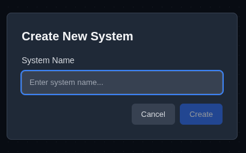
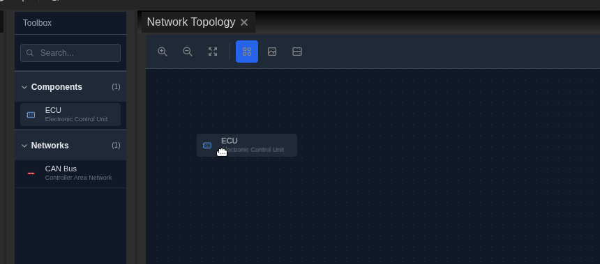
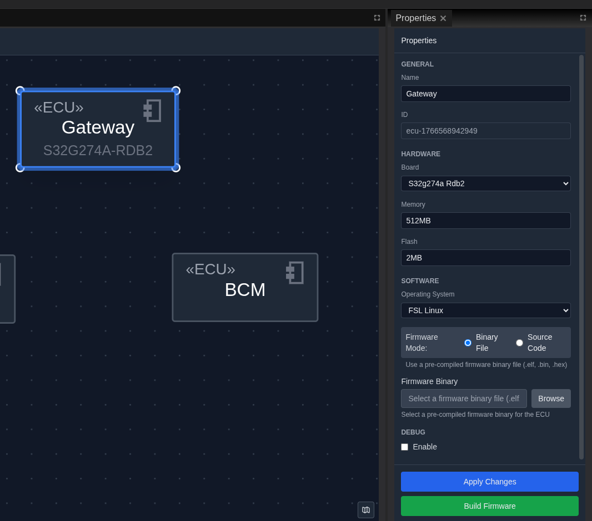
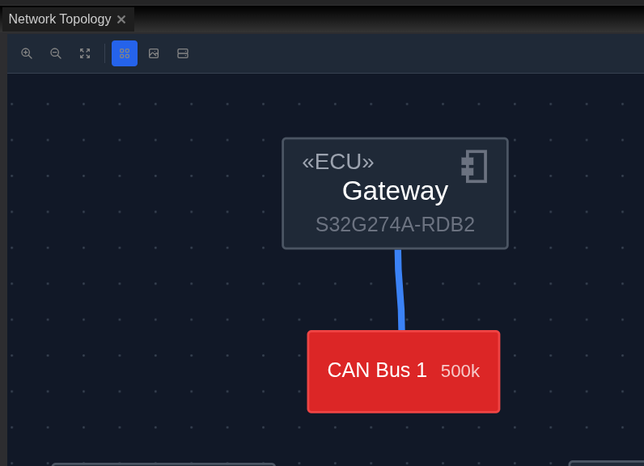
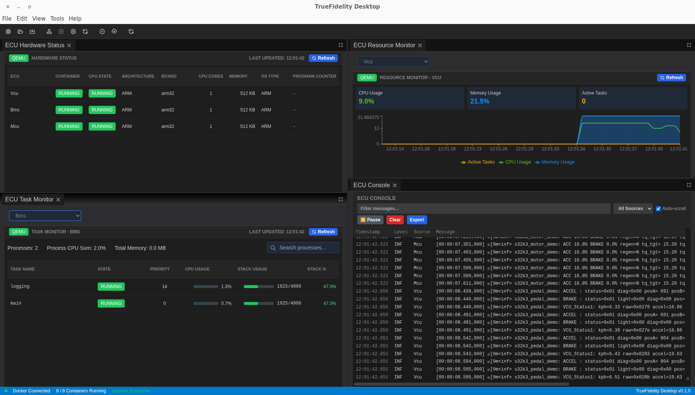
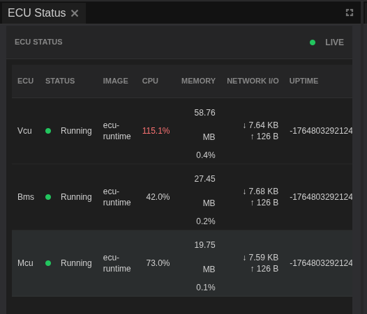

End-to-End Example: CAN Log Analysis Workflow¶
This comprehensive tutorial demonstrates a complete TrueFidelity workflow for analyzing CAN bus data. You'll learn how to create a system, configure networks, deploy ECUs, capture live data, analyze logs with playback, and perform signal injection testing. This tutorial represents a realistic debugging scenario that automotive engineers face daily.
Time Estimate¶
- Initial Setup: 10-15 minutes
- System Configuration: 15-20 minutes
- Data Analysis: 20-30 minutes
- Total Time: 45-65 minutes
Prerequisites¶
Before starting this tutorial, ensure you have:
- TrueFidelity Desktop application installed and licensed
- Docker Desktop running (or Mock Mode enabled for simulation)
- Sample BLF log files (available in the examples folder)
- A DBC file with signal definitions for your CAN network
- Basic familiarity with CAN bus concepts and signal analysis
Scenario Overview¶
You're investigating intermittent issues in a vehicle's powertrain system. The symptoms include:
- Unexpected RPM fluctuations during steady-state cruise
- Occasional throttle response delays
- Diagnostic trouble codes that appear and clear randomly
Your task is to:
- Create a test bench system that mimics the vehicle network
- Replay captured log data to reproduce the issue
- Analyze signal patterns to identify root causes
- Test potential fixes using signal injection
- Document findings for the engineering team
Part 1: System Setup and Configuration¶

Step 1: Create a New System¶
Start by creating a fresh system for your analysis work.
- Launch TrueFidelity Desktop:
- If you see an existing system, save any changes first
-
The application starts in System Design mode by default
-
Create the new system:
- Click File → New System from the menu bar
-
Or use the keyboard shortcut Ctrl+N (Cmd+N on Mac)
-
Configure system properties in the dialog:
- System Name: Enter
PowertrainAnalysis - Description: "Investigation of RPM fluctuations and throttle response"
- Author: Your name
- Version: Leave as 1.0.0
- Click Create

The System Canvas opens with an empty diagram, ready for you to build the network topology.

Step 2: Add the CAN Network¶
You'll need a CAN bus to connect your ECUs and carry the vehicle signals.
- Open the Toolbox panel (left sidebar):
- If not visible, use View → Panels → Toolbox
- The Toolbox contains draggable components

- Add a CAN bus to the canvas:
- In the Toolbox, expand the Networks section
- Find CAN Bus in the list
- Drag it onto the center of the canvas
- The bus appears as a horizontal line with connection points

- Configure the CAN network:
- Click on the CAN bus to select it
- The Properties panel (right side) shows network settings
- Set these properties:
- Name:
Powertrain-CAN - Baud Rate: Will auto-populate from DBC
- DBC File: Click Browse and select your
powertrain.dbcfile - Click Apply Changes at the bottom of Properties
- Name:

Step 3: Add ECUs to the System¶
Now add the ECUs that will participate in the network communication.
- Add the Engine ECU:
- In Toolbox under Components, find Generic ECU
- Drag it above the CAN bus on the canvas
-
Position it centrally above the bus
-
Configure the Engine ECU:
- Click the ECU to select it
- In Properties, set:
- Name:
Engine-ECU - Type: Select
Linux Generic x86_64 - Container Base:
ubuntu:22.04(or your preferred base)
- Name:
- Click Apply Changes

- Add the Transmission ECU:
- Drag another Generic ECU from Toolbox
- Place it to the right of the Engine ECU
-
Configure in Properties:
- Name:
Transmission-ECU - Type:
Linux Generic x86_64 - Click Apply Changes
- Name:
-
Add the Gateway ECU:
- Drag a third Generic ECU from Toolbox
- Place it to the left of the Engine ECU
- Configure:
- Name:
Gateway-ECU - Type:
Linux Generic x86_64 - Click Apply Changes
- Name:

Step 4: Connect ECUs to the Network¶
Each ECU needs to be connected to the CAN bus to communicate.
- Connect the Engine ECU:
- Hover over the Engine ECU box
- Small blue connection handles appear on the edges
- Click and drag from the bottom handle
- Drag the connection line down to the CAN bus
- Release when the bus highlights green (valid connection)
- A connection line appears linking them

- Connect the Transmission ECU:
- Repeat the same process:
- Hover over Transmission ECU
- Drag from bottom handle to CAN bus
-
Release when highlighted
-
Connect the Gateway ECU:
- Connect it the same way to complete the network
- All three ECUs should now be connected to the CAN bus

- Verify connections in Project Explorer:
- Look at the Project Explorer (left panel)
- Expand Networks → Powertrain-CAN
- You should see all three ECUs listed as connected

Step 5: Save the System¶
Before proceeding, save your work to prevent data loss.
- Save the system:
- Click File → Save or press Ctrl+S
- Choose a location for your
.tfsysfile - Name it
PowertrainAnalysis.tfsys -
Click Save
-
Verify save status:
- The title bar should show "PowertrainAnalysis" without an asterisk
- The status bar (bottom) confirms "System saved"

Part 2: System Deployment and Monitoring¶
Step 6: Build and Deploy the System¶
Transform your design into running containers.

- Start the build process:
- Click the Build System button in the toolbar
- Or use System → Build from the menu
-
The build console appears at the bottom
-
Monitor build progress:
- Watch for "Building ECU firmware..." messages
- Each ECU shows "Firmware ready" when complete
- Look for "Build completed successfully"
- If errors occur, check:
- Docker Desktop is running
- Network connectivity is available
- Sufficient disk space exists
- Troubleshooting build failures:
Docker not running:
Error: Cannot connect to Docker daemon
Solution: Start Docker Desktop and retry
Network issues:
Error: Failed to pull base image
Solution: Check internet connection, retry
Disk space:
Error: No space left on device
Solution: Clear Docker cache with: docker system prune
Step 7: Start the System¶
Deploy and run your ECU containers.
- Start the system:
- Click the Start button in the toolbar (green play icon)
- Or use System → Start from the menu
-
Status bar shows "Starting system..."
-
Monitor startup:
- The ECU Console opens automatically
- Watch for startup messages from each ECU
- Look for "ECU initialized" messages
-
Typical startup takes 10-30 seconds
-
Verify all ECUs are running:
- Check the status bar: "3 of 3 containers running"
- In Mock Mode, you'll see simulated container status
Step 8: Switch to Monitoring Mode¶
Monitor the health and status of your running system.
- Switch to Monitoring mode:
- Click View → Monitoring from the menu
- Or click the Monitoring button if available in toolbar
-
The layout changes to show monitoring panels
-
Review the monitoring panels:
- ECU Hardware Status (top) - Shows all ECUs and their states
- ECU Resource Monitor (middle left) - CPU and memory graphs
- ECU Task Monitor (middle right) - Running processes
- ECU Console (bottom) - Live log output

- Verify system health:
In ECU Hardware Status: - All ECUs should show "Running" state - CPU and Memory columns display values - No error indicators present

In ECU Console: - Normal startup messages appear - No error messages in red

Additional monitoring panels show detailed information:


Part 3: CAN Log Analysis¶
Step 9: Switch to CAN Log Analysis Mode¶
Prepare for data analysis and playback.
- Switch modes:
- Click View → CAN Log Analysis from the menu
-
The layout reconfigures for signal analysis
-
Understand the new layout:
- Signal Viewer (left) - Hierarchical signal tree
- Network Traffic (center) - Live CAN frames
- Signal Chart (right) - Time-series plots
- Signal Player & Injection (bottom) - Playback controls

Step 10: Load and Configure Playback Data¶
Load your captured BLF log file for analysis.
- Open the Signal Player panel:
- Locate it at the bottom of the screen
-
If not visible, use View → Panels → Signal Player
-
Load the BLF file:
- Click Select BLF button
- Navigate to your log file:
rpm_fluctuation_capture.blf - Click Open
-
The file loads and displays statistics
-
Inspect the loaded data:
- Click Inspect bundle to see details:
- Total frames in the log
- Duration of the capture
- Detected CAN channels
- Frame rate statistics

- Verify DBC mapping:
- The Networks list shows your Powertrain-CAN
- Confirm the DBC file is properly associated
- Check that signal decoding is active
Step 11: Start Playback and Monitor Signals¶
Begin replaying the captured data through your system.
- Start playback:
- Ensure the system is running (toolbar shows Stop button)
- In Signal Player, click the Play button
- Playback begins at 1x speed
-
The progress bar shows current position
-
Monitor live traffic:
- Switch to the Network Traffic panel
- CAN frames appear as they're replayed:
- Timestamp updates continuously
- CAN IDs show in hexadecimal
- Data bytes display in the data column
- Frame count increments

- Use traffic filters (if needed):
- To focus on specific messages:
- Enter a CAN ID in the filter field (e.g.,
0x100) - Or filter by data pattern
- Click Apply Filter
- Enter a CAN ID in the filter field (e.g.,
- To see all traffic again:
- Clear the filter field
- Click Clear Filter
Step 12: Analyze Decoded Signals¶
Examine the decoded signal values to identify issues.
- Open Signal Viewer:
- Click on the Signal Viewer panel (left side)
-
The tree shows all signals from your DBC
-
Find relevant signals:
- Use the search box at the top
- Search for "RPM" to find engine speed
- The tree filters to matching signals
-
Clear search to see all signals again
-
Examine signal details:
- Expand CAN frames to see their signals:
- Click the arrow next to frame
0x100(EngineData) - Signals appear indented below
- Live values update during playback
- Click the arrow next to frame
- Key signals to monitor:
Engine_RPM- Current engine speedThrottle_Position- Accelerator pedal positionVehicle_Speed- Current vehicle speed

- Select signals for charting:
- Click the checkbox next to
Engine_RPM - Select
Throttle_Position - Select
Vehicle_Speed - These signals are now ready for plotting
Step 13: Chart and Analyze Signal Patterns¶
Visualize signal behavior over time to identify anomalies.
- View the Signal Chart:
- Click on the Signal Chart panel (right side)
- Selected signals appear as colored lines
- Time axis shows along the bottom
-
Value axis shows on the left
-
Configure chart settings:
- Time Window: Set to 30 seconds for detail
- Auto-scale: Enable to fit all values
- Grid: Enable for easier reading
-
Legend: Shows signal names and colors
-
Identify the anomaly:
- Play through the log while watching the chart
- Look for unusual patterns:
- RPM spikes without throttle input
- Delayed throttle response
- Oscillations in steady-state
- When you spot an issue:
- Click Pause in Signal Player
- Note the timestamp

- Zoom into the problem area:
- Use mouse wheel to zoom time axis
- Click and drag to pan along timeline
- Adjust Time Window to 5 seconds for detail
-
The anomaly should be clearly visible
-
Document findings:
- Take a screenshot of the chart:
- Right-click on chart
- Select Export Chart
- Save as
rpm_anomaly_chart.png
- Note the exact timestamp range
- Record signal values at the anomaly
Part 4: Signal Injection Testing¶
Step 14: Prepare for Signal Injection¶
Test how the system responds to controlled inputs.
- Understanding injection capabilities:
- Signal injection sends CAN frames to the network
- Useful for testing ECU responses
- Can replay specific signal patterns
-
Helps validate fixes and theories
-
Access injection controls:
- In the Signal Player & Injection panel
- Look for the Injection section
- Controls include:
- Start all - Begin injection
- Pause all - Temporarily stop
- Stop all - End injection
- Signal configuration options

- Safety considerations:
WARNING: Signal injection can affect running ECUs. - Only inject into test bench systems - Never inject into production vehicles - Verify ECU configuration allows test inputs - Monitor system response carefully
Step 15: Configure and Execute Injection¶
Set up a controlled test to reproduce the issue.
- Select signals for injection:
- In Signal Viewer, identify the signals to inject
-
Common injection targets:
- Throttle position sensor values
- Speed sensor inputs
- Temperature readings
-
Configure injection parameters:
- Signal values to inject
- Injection rate (messages per second)
- Duration of injection
-
Pattern (constant, ramp, sine wave)
-
Start injection:
- Ensure system is running
- Clear Network Traffic to see new data
- Click Start all in injection controls
-
Monitor the response:
- Network Traffic shows injected frames
- Signal Chart displays the injected values
- ECU Console may show diagnostic messages
-
Analyze system response:
- Does the RPM fluctuation reproduce?
- How do other signals respond?
- Any error codes generated?
-
System stability maintained?
-
Stop injection:
- Click Stop all when test completes
- Allow system to return to idle state
- Document the results
Part 5: Data Export and Documentation¶
Step 16: Export Analysis Data¶
Save your findings for reporting and further analysis.
- Export network traffic:
- In Network Traffic panel
- Click Export button
- Choose format:
- CSV for spreadsheet analysis
- BLF for replay in other tools
- Name file:
analysis_traffic_export.csv -
Click Save
-
Export signal data:
- Ensure relevant signals are selected
- Time range includes the anomaly
- Export includes decoded values
-
Save as:
signal_analysis_export.csv -
Export chart images:
- Right-click on Signal Chart
- Select Export Chart
- Save as PNG or PDF
- Name:
rpm_anomaly_chart.png
Step 17: Create Analysis Summary¶
Document your findings for the team.
- Compile findings:
- Anomaly timestamp: Exact time of issue
- Affected signals: List all involved signals
- Pattern description: What happened
- Injection results: How system responded
-
Potential causes: Your analysis
-
Prepare deliverables - organize your files in this structure:
-
PowertrainAnalysis/- Main project directoryPowertrainAnalysis.json- System configuration fileexports/- Export directoryanalysis_traffic_export.csv- Network traffic datasignal_analysis_export.csv- Signal analysis datarpm_anomaly_chart.png- Chart screenshotlogs/- Log files directoryrpm_fluctuation_capture.blf- Original capture fileanalysis_summary.txt- Analysis summary document
-
Write summary document with the following sections:
Document Header:
- Title: "Powertrain Analysis Summary"
- Date: [Current Date]
- Engineer: [Your Name]
Issue Description:
- Primary issue: RPM fluctuations during steady-state cruise
- Symptoms observed during testing
Key Findings:
- Anomaly timestamp: 14:32:15.234
- RPM spike details: 2000 to 2500 RPM without throttle input
- Pattern frequency: Repeats every 30-45 seconds
- Correlation: Linked to transmission shift points
Injection Testing Results:
- Test performed: Throttle position injection
- Result: Successfully reproduced the issue
- Observation: System response delayed by 200ms
- Conclusion: Suggests control loop timing issue
Recommendations:
- Review transmission ECU shift logic
- Check CAN bus utilization during shifts
- Verify control loop timing parameters
- Consider adjusting control loop response time
Part 6: System Cleanup¶
Step 18: Stop and Clean Up¶
Properly shut down the system after analysis.
- Stop the running system:
- Click the Stop button in toolbar
- Confirm when prompted
- Wait for "System stopped" message
-
All containers terminate gracefully
-
Save final system state:
- File → Save to preserve any changes
- System configuration is updated
-
Analysis setup is preserved
-
Clean up resources (if needed):
- In terminal:
docker psto check containers docker system pruneto free space- Remove temporary export files if not needed
Troubleshooting Guide¶
Common Issues and Solutions¶
System Won't Start¶
Symptom: Start button clicked but ECUs don't run
Solutions:
- Check Docker Desktop is running
- Verify no port conflicts (8080, 8081)
- Review ECU Console for error messages
- Try Mock Mode if Docker issues persist
No CAN Traffic Visible¶
Symptom: Network Traffic panel stays empty
Solutions:
- Verify system is running (not just built)
- Check BLF file is loaded in Signal Player
- Press Play in Signal Player (not just load)
- Confirm DBC file is properly associated
- Check Network Traffic filters aren't too restrictive
Signals Not Decoding¶
Symptom: See CAN IDs but no signal names
Solutions:
- Verify DBC file path in network properties
- Check DBC file contains definitions for your CAN IDs
- Reload the system after DBC changes
- Ensure Signal Viewer panel is refreshed
Playback Not Working¶
Symptom: Play button disabled or nothing happens
Solutions:
- System must be running first
- BLF file must be loaded
- Check file isn't corrupted
- Verify sufficient memory for large logs
- Try smaller BLF file to test
Chart Not Updating¶
Symptom: Signal Chart remains empty
Solutions:
- Select signals in Signal Viewer first
- Ensure playback is running
- Check time window settings
- Verify Auto-scale is enabled
- Refresh the chart panel
Injection Not Sending¶
Symptom: Start injection but no frames appear
Solutions:
- System must be running
- Network must be properly configured
- Check injection isn't paused
- Verify signal configuration
- Monitor ECU Console for errors
Tips for Effective Analysis¶
Performance Optimization¶
- For large BLF files:
- Close unnecessary panels to free memory
- Use filters to reduce displayed data
- Export smaller time ranges
-
Process in segments if needed
-
For smooth playback:
- Limit number of charted signals
- Reduce Signal Chart time window
- Disable auto-scroll in Network Traffic
- Close other applications
Analysis Best Practices¶
- Signal selection:
- Start with key signals only
- Add related signals as needed
- Group similar signals for comparison
-
Use consistent time windows
-
Documentation:
- Screenshot important findings immediately
- Note exact timestamps
- Export data before making changes
-
Keep analysis notes in text file
-
Injection testing:
- Start with known-good values
- Change one parameter at a time
- Monitor all related signals
- Stop immediately if instability occurs
Advanced Topics¶
Working with Multiple Networks¶
If your system has multiple CAN buses:
- Add additional CAN networks to canvas
- Connect ECUs to appropriate buses
- Load separate DBC for each network
- Switch between networks in Network Traffic
- Filter signals by network in Signal Viewer
Custom ECU Applications¶
For ECUs running custom applications:
- Ensure application uses SocketCAN
- Configure CAN interface in ECU
- Build application into container
- Monitor application logs in ECU Console
- Use Terminal panel for debugging

Integration with External Tools¶
Export data for analysis in other tools:
- MATLAB/Simulink:
- Export as CSV with timestamps
- Import into MATLAB workspace
-
Process with Signal Processing Toolbox
-
Python Analysis:
- Export as CSV
- Use pandas for data manipulation
- Plot with matplotlib
-
Perform statistical analysis
-
CANalyzer/CANoe:
- Export as BLF
- Import into Vector tools
- Apply existing test configurations
Next Steps¶
After completing this tutorial, you're ready to:
- Create complex multi-bus systems with various ECU types
- Analyze real vehicle logs from road tests or bench testing
- Develop injection test sequences for validation
- Build custom monitoring dashboards with preferred panel layouts
- Integrate with CI/CD pipelines for automated testing
Additional Resources¶
- System Design Guide: Details on network topologies and ECU configuration
- Monitoring Guide: Deep dive into performance analysis and debugging
- Signal Analysis Guide: Advanced filtering and pattern recognition
- Docker Integration: Custom container configuration and optimization
Summary¶
You've successfully completed a full CAN analysis workflow in TrueFidelity:
- ✅ Created and configured a multi-ECU system
- ✅ Connected ECUs to a CAN network with DBC definitions
- ✅ Built and deployed the system using Docker containers
- ✅ Monitored system health and resource usage
- ✅ Loaded and played back captured CAN logs
- ✅ Analyzed decoded signals and identified anomalies
- ✅ Performed signal injection testing
- ✅ Exported data for documentation and reporting
This workflow forms the foundation for more complex automotive testing, validation, and debugging tasks. Practice with different log files and signal patterns to build expertise with the TrueFidelity platform.